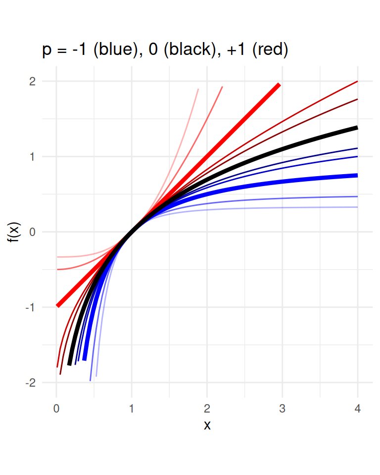

W#05: Descriptive Statistics, Exploratory Data Analysis
Author
Jan Lorenz
0.1 Preliminaries
In this lectures we will use these packages and datasets. You need to do this code in the Console to download data and play with some of the code in this lecture.
library(tidyverse)
── Attaching core tidyverse packages ──────────────────────── tidyverse 2.0.0 ──
✔ dplyr 1.1.4 ✔ readr 2.1.5
✔ forcats 1.0.0 ✔ stringr 1.5.1
✔ ggplot2 3.5.2 ✔ tibble 3.3.0
✔ lubridate 1.9.4 ✔ tidyr 1.3.1
✔ purrr 1.1.0
── Conflicts ────────────────────────────────────────── tidyverse_conflicts() ──
✖ dplyr::filter() masks stats::filter()
✖ dplyr::lag() masks stats::lag()
ℹ Use the conflicted package (<http://conflicted.r-lib.org/>) to force all conflicts to become errors
library(palmerpenguins)
Attaching package: 'palmerpenguins'
The following objects are masked from 'package:datasets':
penguins, penguins_raw
if (!file.exists("data/galton.csv")) {download.file(url ="https://raw.githubusercontent.com/CU-F24-MDSSB-01-Concepts-Tools/Website/refs/heads/main/data/galton.csv", destfile ="data/galton.csv")} if (!file.exists("data/Viertelfest.csv")) {download.file(url ="https://raw.githubusercontent.com/CU-F24-MDSSB-01-Concepts-Tools/Website/refs/heads/main/data/Viertelfest.csv", destfile ="data/Viertelfest.csv")} galton <-read_csv("data/galton.csv")
Rows: 787 Columns: 2
── Column specification ────────────────────────────────────────────────────────
Delimiter: ","
dbl (2): Estimate, id
ℹ Use `spec()` to retrieve the full column specification for this data.
ℹ Specify the column types or set `show_col_types = FALSE` to quiet this message.
viertel <-read_csv("data/Viertelfest.csv")
Rows: 1226 Columns: 3
── Column specification ────────────────────────────────────────────────────────
Delimiter: ","
chr (1): Date Time
dbl (2): Losnummer, Schätzung
ℹ Use `spec()` to retrieve the full column specification for this data.
ℹ Specify the column types or set `show_col_types = FALSE` to quiet this message.
Tip: Run the script in an R-project and have a folder data/ in it such that the local path works!
1 Descriptive Statistics
1.1 Descriptive vs. Inferential Statistics
The process of using and analyzing summary statistics
Solely concerned with properties of the observed data.
Distinct from inferential statistics:
Inference of properties of an underlying distribution given sampled observations from a larger population.
Summary Statistics are used to summarize a set of observations to communicate the largest amount of information as simple as possible.
1.2 Summary statistics
Univariate (for one variable)
Measures of location, or central tendency
Measures of statistical dispersion
Measure of the shape of the distribution like skewness or kurtosis
Bivariate (for two variables)
Measures of statistical dependence or correlation
2 Measures of central tendency
2.1 Measures of central tendency
Goal: For a sequence of numerical observations \(x_1,\dots,x_n\) we want to measure
the “typical” value.
a value summarizing the location of values on the numerical axis.
Three different ways:
Arithmetic mean (also mean, average): Sum of the all observations divided by the number of observations \(\frac{1}{n}\sum_{i=1}^n x_i\)
Median: Assume \(x_1 \leq x_2 \leq\dots\leq x_n\). Then the median is middlemost values in the sequence \(x_\frac{n+1}{2}\) when \(n\) odd. For \(n\) even there are two middlemost values and the median is \(\frac{x_\frac{n}{2} + x_\frac{n+1}{2}}{2}\)
Mode: The value that appears most often in the sequence.
2.2 Measures of central tendency: Examples
x <-c(1, 2, 4, 10, 300)mean(x)
[1] 63.4
median(x)
[1] 4
y <-c(-2, -2, 4, 7, 7, 7)mean(y)
[1] 3.5
median(y)
[1] 5.5
Median of an even number of numbers: Mean of two most central numbers.
Warning: Mode is not unique and there is no fix like for the Median.
2.3 Philosophy of aggregation
The mean represents total value per value. Example: per capita income in a town is the total income per individual
The median represents the value such that half of the values are lower and higher. In a democracy where each value is represented by one voter preferring it, the median is the value which is unbeatable by an absolute majority. Half of the people prefer higher the other half lower values. (Median voter model)
The mode represents the most common value. In a democracy, the mode represents the winner of a plurality vote where each value runs as a candidate and the winner is the one with the most votes.
2.4 Mean, Median, Mode properties
Do they deliver one unambiguous answer for any sequence?
. . .
Mean and median, yes.
The mode has no rules for a tie.
. . .
Can they by generalized to variables with ordered or even unordered categories?
. . .
Mean: No.
Median: For ordered categories (except when even number and the two middlemost are not the same)
Mode: For any categorical variable.
. . .
Is the measure always also in the data sequence?
. . .
Mean: No.
Median: Yes, for sequences of odd length.
Mode: Yes.
For \(p = 0\) it is \(M_0(x_1, \dots, x_n) = (\prod_{i=1}^n x_i)^\frac{1}{n}\).
\(M_1\) is the arithmetic mean. \(M_0\) is called the geometric mean. \(M_{-1}\) the harmonic mean.
Note: Generalized means are often only reasonable when all values are positive \(x_i > 0\).
\(M_0\) can also be expressed as the exponential (\(\exp(x) = e^x\)) of the mean of the the \(\log\)’s of the \(x_i\)’s: \(\exp(\log((\prod_{i=1}^n x_i)^\frac{1}{n})) = \exp(\frac{1}{n}\sum_{i=1}^n\log(x_i))\).
Warning: Using `size` aesthetic for lines was deprecated in ggplot2 3.4.0.
ℹ Please use `linewidth` instead.
Warning: Removed 26 rows containing missing values or values outside the scale range
(`geom_function()`).
Warning: Removed 45 rows containing missing values or values outside the scale range
(`geom_function()`).
Warning: Removed 53 rows containing missing values or values outside the scale range
(`geom_function()`).
Warning: Removed 1 row containing missing values or values outside the scale range
(`geom_function()`).
Warning: Removed 9 rows containing missing values or values outside the scale range
(`geom_function()`).
Warning: Removed 7 rows containing missing values or values outside the scale range
(`geom_function()`).
Warning: Removed 6 rows containing missing values or values outside the scale range
(`geom_function()`).
Warning: Removed 11 rows containing missing values or values outside the scale range
(`geom_function()`).
Warning: Removed 13 rows containing missing values or values outside the scale range
(`geom_function()`).
Warning: Removed 4 rows containing missing values or values outside the scale range
(`geom_function()`).

3 Measures of central tendency and the Wisdom of the Crowd
3.1 Application: The Wisdom of the Crowd
Phenomenon: When collective estimate of a diverse group of independent individuals is better than that of single experts.
The classical wisdom-of-the-crowds finding is about point estimation of a continuous quantity.
Popularized by James Surowiecki (2004).
The opening anecdote is about Francis Galton’s2 surprise in 1907 that the crowd at a county fair accurately guessed the weight of an ox’s meat when their individual guesses were averaged.
galton |>ggplot(aes(Estimate)) +geom_histogram(binwidth =5) +geom_vline(xintercept =1198, color ="green") +geom_vline(xintercept =mean(galton$Estimate), color ="red") +geom_vline(xintercept =median(galton$Estimate), color ="blue") +geom_vline(xintercept =Mode(galton$Estimate), color ="purple")
787 estimates, true value 1198, mean 1196.7, median 1208, mode 1218
How many lots will be sold by the end of the festival?
viertel |>ggplot(aes(`Schätzung`)) +geom_histogram() +geom_vline(xintercept =10788, color ="green") +geom_vline(xintercept =mean(viertel$Schätzung), color ="red") +geom_vline(xintercept =median(viertel$Schätzung), color ="blue") +geom_vline(xintercept =Mode(viertel$Schätzung), color ="purple")
`stat_bin()` using `bins = 30`. Pick better value with `binwidth`.
1226 estimates, the maximal value is 29530000! We should filter …
3.4 Viertelfest Bremen 2008
How many lots will be sold by the end of the festival?
viertel <-read_csv("data/Viertelfest.csv")
Rows: 1226 Columns: 3
── Column specification ────────────────────────────────────────────────────────
Delimiter: ","
chr (1): Date Time
dbl (2): Losnummer, Schätzung
ℹ Use `spec()` to retrieve the full column specification for this data.
ℹ Specify the column types or set `show_col_types = FALSE` to quiet this message.
viertel |>filter(Schätzung<100000) |>ggplot(aes(`Schätzung`)) +geom_histogram(binwidth =500) +geom_vline(xintercept =10788, color ="green") +geom_vline(xintercept =mean(viertel$Schätzung), color ="red") +geom_vline(xintercept =median(viertel$Schätzung), color ="blue") +geom_vline(xintercept =Mode(viertel$Schätzung), color ="purple") +geom_vline(xintercept =exp(mean(log(viertel$Schätzung))), color ="orange")
1226 estimates, true value 10788, mean 53163.9, median 9843, mode 10000, geometric mean 10510.1
3.5\(\log_{10}\) transformation Viertelfest
viertel |>mutate(log10Est =log10(Schätzung)) |>ggplot(aes(log10Est)) +geom_histogram(binwidth =0.05) +geom_vline(xintercept =log10(10788), color ="green") +geom_vline(xintercept =log10(mean(viertel$Schätzung)), color ="red") +geom_vline(xintercept =log10(median(viertel$Schätzung)), color ="blue") +geom_vline(xintercept =log10(Mode(viertel$Schätzung)), color ="purple") +geom_vline(xintercept =mean(log10(viertel$Schätzung)), color ="orange")
1226 estimates, true value 10788, mean 53163.9, median 9843, mode 10000, geometric mean 10510.1
3.6 Wisdom of the crowd insights
In Galton’s sample the different measures do not make a big difference
In the Viertelfest data the arithmetic mean performs very bad!
The mean is vulnerable to extreme values.
Quoting Galton on the mean as a democratic aggregation function: “The mean gives voting power to the cranks in proportion to their crankiness.”
The mode tends to be on focal values as round numbers (10,000). In Galton’s data this is not so pronounced beause estimators used several weight units (which Galton converted to pounds).
How to choose a measure to aggregate the wisdom?
By the nature of the estimate problem? Is the scale mostly clear? (Are we in the hundreds, thousands, ten thousands, …)
By the nature of the distribution?
There is no real insurance against a systematic bias in the population.
How spread out values are around the central tendency.
How stretched or squeezed is the distribution?
Variance is the mean of the squared deviation from the mean: \(\text{Var}(x) = \frac{1}{n}\sum_{i=1}^n(x_i - \mu)^2\) where \(\mu\) (mu) is the mean.
. . .
Standard deviation is the square root of the variance \(\text{SD}(x) = \sqrt{\text{Var}(x)}\).
The standard deviation is often denoted \(\sigma\) (sigma) and the variance \(\sigma^2\).
. . .
Mean absolute deviation (MAD) is the mean of the absolute deviation from the mean: \(\text{MAD}(x) = \frac{1}{n}\sum_{i=1}^n|x_i - \mu|\).
. . .
Warning: MAD can also be Median absolute deviation from the median.
Range is the difference of the maximal and the minimal value \(\max(x) - \min(x)\).
4.2 Examples of measures of dispersion
var(galton$Estimate)
[1] 5415.013
sd(galton$Estimate)
[1] 73.58677
mad(galton$Estimate) # Warning: median absolute deviation is default
[1] 51.891
range(galton$Estimate) # Oh, range gives us a vector of min and max. So, we diff
[1] 896 1516
diff(range(galton$Estimate))
[1] 620
var(viertel$Schätzung)
[1] 719774887849
sd(viertel$Schätzung)
[1] 848395.5
mad(viertel$Schätzung) # Warning: median absolute deviation is default
[1] 8771.803
range(viertel$Schätzung) # Oh, range gives us a vector of min and max. So, we diff
[1] 120 29530000
diff(range(viertel$Schätzung))
[1] 29529880
Variance (and standard deviation) in statistics is usually computed with \(\frac{1}{n-1}\) instead of \(\frac{1}{n}\) to provide an unbiased estimator of the potentially underlying population variance. We omit more detail here.
4.3 Normalization of variables
In Machine Learning, Statistics, and Descripitve Analysis we often want to bring different variables to common scales. We want to make the dispersion and the location comparable.
To that end, some linear transformation are common:
Standardization
Min-max Feature Scaling
When we normalize a variable we receive a dimensionless variable. It does not have a unit.
Example: We measure height in \(m\) meters. When we standardize are scale by min-max the new variable has no unit. Mathematically it cancels out.
4.4 Standardization
Variables are standardized by subtracting their mean and then dividing by their standard deviations.
A value from a standardized variable is called a standard score or z-score.
\(z_i = \frac{x_i - \mu}{\sigma}\)
where \(\mu\) is the mean and \(\sigma\) the standard deviation of the vector \(x\).
This is a shift-scale transformation. We shift each value by the mean and scale by the standard deviation.
A standard score \(z_i\) represents how many standard deviations \(x_i\) is away from the mean of \(x\).
The standard scores \(z_i\)’s have a mean of zero and a standard deviation of one (by construction).
4.5 Min-max Feature Scaling
When we want to make the values of the scaled variable to range from zero to one.
# A tibble: 344 × 8
species island bill_length_mm bill_depth_mm flipper_length_mm body_mass_g
<fct> <fct> <dbl> <dbl> <int> <int>
1 Adelie Torgersen 39.1 18.7 181 3750
2 Adelie Torgersen 39.5 17.4 186 3800
3 Adelie Torgersen 40.3 18 195 3250
4 Adelie Torgersen NA NA NA NA
5 Adelie Torgersen 36.7 19.3 193 3450
6 Adelie Torgersen 39.3 20.6 190 3650
7 Adelie Torgersen 38.9 17.8 181 3625
8 Adelie Torgersen 39.2 19.6 195 4675
9 Adelie Torgersen 34.1 18.1 193 3475
10 Adelie Torgersen 42 20.2 190 4250
# ℹ 334 more rows
# ℹ 2 more variables: sex <fct>, year <int>
5.3summary from base R
Shows summary statistics for the values in a vector
summary(galton$Estimate)
Min. 1st Qu. Median Mean 3rd Qu. Max.
896 1162 1208 1197 1236 1516
summary(viertel$Schätzung)
Min. 1st Qu. Median Mean 3rd Qu. Max.
120 5000 9843 53164 20000 29530000
Or for all columns in a data frame
summary(penguins)
species island bill_length_mm bill_depth_mm
Adelie :152 Biscoe :168 Min. :32.10 Min. :13.10
Chinstrap: 68 Dream :124 1st Qu.:39.23 1st Qu.:15.60
Gentoo :124 Torgersen: 52 Median :44.45 Median :17.30
Mean :43.92 Mean :17.15
3rd Qu.:48.50 3rd Qu.:18.70
Max. :59.60 Max. :21.50
NA's :2 NA's :2
flipper_length_mm body_mass_g sex year
Min. :172.0 Min. :2700 female:165 Min. :2007
1st Qu.:190.0 1st Qu.:3550 male :168 1st Qu.:2007
Median :197.0 Median :4050 NA's : 11 Median :2008
Mean :200.9 Mean :4202 Mean :2008
3rd Qu.:213.0 3rd Qu.:4750 3rd Qu.:2009
Max. :231.0 Max. :6300 Max. :2009
NA's :2 NA's :2
Question
What does 1st Qu. and 3rd Qu. mean?
6 Quantiles
6.1 Quantiles
Cut points specifying intervals which contain equal amounts of values of the distribution.
\(q\)-quantiles divide numbers into \(q\) intervals covering all values.
The quantiles are the cut points: For \(q\) intervals there are \(q-1\) cut points of interest.
The one 2-quantile is the median
The three 4-quantiles are called quartiles
1st Qu. is the first quartile
The second quartile is the median
3rd Qu. is the third quartile
100-quantiles are called percentiles
We omit problems of estimating quantiles from a sample where the number of estimates does not fit to a desired partition of equal size here.
6.2 1a Galton: Quartiles
# Min, 3 Quartiles, Maxquantile(galton$Estimate, prob =seq(0, 1, by =0.25))
The box shows the median in the middle and the other two quartiles as their borders.
Whiskers: From above the upper quartile, a distance of 1.5 times the IQR is measured out and a whisker is drawn up to the largest observed data point from the dataset that falls within this distance. Similarly, for the lower quartile.
Whiskers must end at an observed data point! (So lengths can differ.)
All other values outside of box and whiskers are shown as points and often called outliers. (There may be none.)
6.10 Boxplots vs. histograms
Histograms can show the shape of the distribution well, but not the summary statistics like the median.
Warning: Removed 2 rows containing non-finite outside the scale range
(`stat_bin()`).
7 More Summary Statistics
7.1 Minimizing proporties of Mean and Median
Mean minimizes the mean of squared deviations from it. No other value \(a\) has a lower mean of square distances from the data points. \(\frac{1}{n}\sum_{i=1}^n(x_i - a)^2\).
. . .
Median minimizes the sum of the absolute deviation. No other value \(a\) has a lower mean of absolute distances from the data points. \(\frac{1}{n}\sum_{i=1}^n|x_i - a|\).
. . .
The Concept of Minimizing
Is central for all statisitical fitting and learning procedures! These are among the simplest examples of this concept.
7.2 Two families of summary statistics
Measures based on sums (related to mathematical moments)
Mean
Standard deviation
Measures based on the ordered sequence of these observations (order statistics)
Median (and all quantiles)
Interquartile range
7.3 A hierarchy of moments
\(k\)th raw moment: \(\frac{1}{n}\sum_i^n x_i^k\).
The mean is the 1st raw moment (because no exponents appear in formula)
The variance is the 2nd raw moment the mean-shifted \(x\)
The 3rd moment appears in the definition of the skewness of \(x\)
The 4th moment appears in the definition of the kurtosis of \(x\)
7.4 Skewness
The skewness of a distribution is a measure of its asymmetry.
Positive skewness: The right tail is longer or fatter than the left tail.
Negative skewness: The left tail is longer or fatter than the right tail.
The relation of mean and median can give a hint on skewness!
The Viertelfest data is heavily positively skew. (The Galton data is a little bit negatively skew, but it is barely visible.)
7.5 Kurtosis
The kurtosis of a distribution is a measure of the “tailedness” of the distribution. It often goes along with also higher “peakedness”.
(Note: Do you are missing $ terms compared to covariance? They all cancel out!)
. . .
Relation to covariance: \(r_{xy} = \frac{\text{cov}(x,y)}{\sigma_x\sigma_y}\)
where \(\sigma_x\) and \(\sigma_y\) are the standard deviations of \(x\) and \(y\).
Relation to standard scores:
When \(x\) and \(y\) are standard scores (each with mean zero and standard deviation one), then \(\text{cov}(x,y) = r_{xy}\).
There are other correlation coefficients which we omit here.
8.3 Interpretation of correlation
Correlation between two vectors \(x\) and \(y\) is “normalized”.
What do the stars mean? Statistical significance automatically added by the . We treat that later.
8.6 Correlation visualization
results %>%summary(redundant =TRUE) %>%plot()
9 Exploratory Data Analysis
9.1 Exploratory Data Analysis
EDA is the systematic exploration of data using
visualization
transformation
computation of characteristic values
modeling
Computation of characteristic values: Functions like mean, median, mode, standard deviation, or interquartile range
Modeling: Operations like linear regression or dimensionality reduction. We haven’t talked about it, but will do soon.
9.2 Systematic but no standard routine
“There are no routine statistical questions, only questionable statistical routines.” — Sir David Cox
“Far better an approximate answer to the right question, which is often vague, than an exact answer to the wrong question, which can always be made precise.” — John Tukey
9.3 Systematic but no standard routine
Goal of EDA: Develop understanding of your data.
EDA’s iterative cycle
Generate questions about your data.
Search for answers by visualizing, transforming, and modelling your data.
Use what you learn to refine your questions and/or generate new questions.
EDA is fundamentally a creative process.
9.4 Questions
The way to ask quality questions:
Generate many questions!
You cannot come up with most interesting questions when you start.
There is no rule which questions to ask. These are useful
What type of variation occurs within my variables?
(Barplots, Histograms,…)
What type of covariation occurs between my variables?
(Scatterplots, Timelines,…)
9.5 EDA embedded in a statistical data science project
Stating and refining the question
Exploring the data
Building formal statistical models
Interpreting the results
Communicating the results
Roger D. Peng and Elizabeth Matsui. “The Art of Data Science.” A Guide for Anyone Who Works with Data. Skybrude Consulting, LLC (2015).
10 Data science projects
Outline of question-driven data work
10.1 Six types of questions
Descriptive: summarize a characteristic of a set of data
Exploratory: analyze to see if there are patterns, trends, or relationships between variables (hypothesis generating)
Inferential: analyze patterns, trends, or relationships in representative data from a population
Predictive: make predictions for individuals or groups of individuals
Causal: whether changing one factor will change another factor, on average, in a population
Mechanistic: explore “how” one factor (probably/most likely/potentially) changes another
Dubin (1969). Theory Building - A Practical Guide to the Construction and Testing of Theoretical Models
10.3 Data Analysis Flowchart
10.4 Example: COVID-19 and Vitamin D
Descriptive: frequency of hospitalisations due to COVID-19 in a set of data collected from a group of individuals
Exploratory: examine relationships between a range of dietary factors and COVID-19 hospitalisations
Inferential: examine whether any relationship between taking Vitamin D supplements and COVID-19 hospitalisations found in the sample hold for the population at large
Predictive: what types of people will take Vitamin D supplements during the next year
Causal: whether people with COVID-19 who were randomly assigned to take Vitamin D supplements or those who were not are hospitalised
Mechanistic: how increased vitamin D intake leads to a reduction in the number of viral illnesses
10.5 Questions to questions
Do you have appropriate data to answer your question?
Do you have information on confounding variables?
Was the data you’re working with collected in a way that introduces bias?
Example
I want to estimate the average number of children in households in Bremen. I conduct a survey at an elementary school and ask pupils how many children, including themselves, live in their house. Then, I take the average of the responses.
Is this a biased or an unbiased estimate of the number of children in households in Bremen?
If biased, will the value be an overestimate or underestimate?
10.6 Context Information is important!
Not all information is in the data!
Potential confounding variables you infer from general knowledge
Information about data collection you may receive from an accompanying report
Information about computed variables you may need to look up in accompanying documentation
Information about certain variables you may find in an accompanying codebook. For example the exact wording of questions in survey data.


 A logarithmic y-axis shows the fatter tails!
A logarithmic y-axis shows the fatter tails!